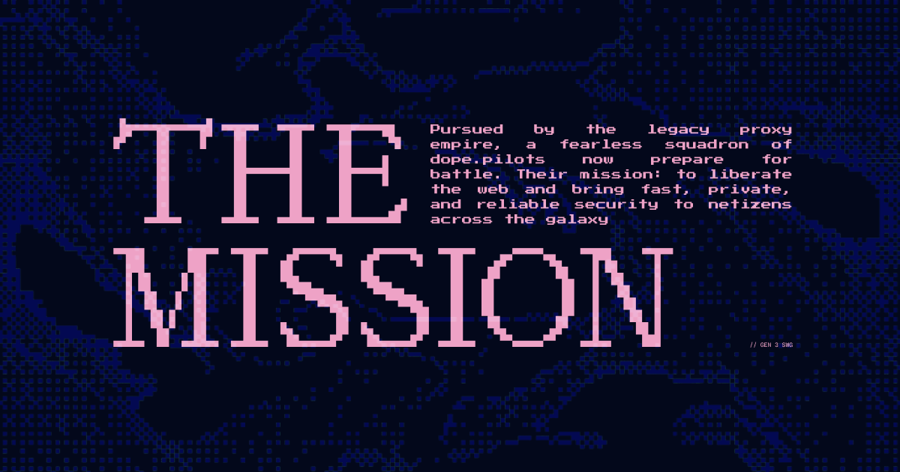

Microsite design & Direction
Serious Product, Unserious Marketing
I concepted SWG Wars as a holiday campaign for dope.security: a retro arcade game that turned legacy security headaches into enemies worth shooting. With limited budget and resources, I proposed building it in-house—giving us room to make something distinctive without a full agency production.
The Work
Big idea. Small team. Game on.
I led the concept and creative direction, translating dope.security’s challenger positioning into a playable world. The retro arcade format was a deliberate choice to give an otherwise technical story characters, stakes, and a reason to keep playing.
To move from pitch to production, I built mockups and prototypes in Figma, Framer, and Cursor, researched development libraries to underpin the game, and directed frontend game development. I also art directed asset production, keeping the game and campaign site part of the same visual universe.
I designed, built, and launched the microsite myself, including the interactions, custom code injections, and responsive layouts. Ownership ran from the initial idea through the details that made it work.
